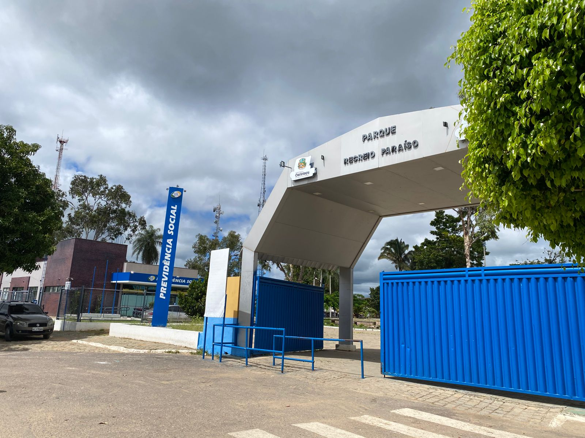
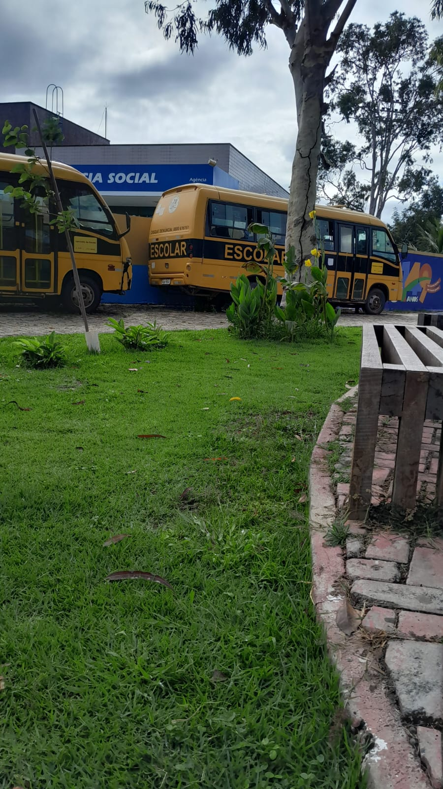
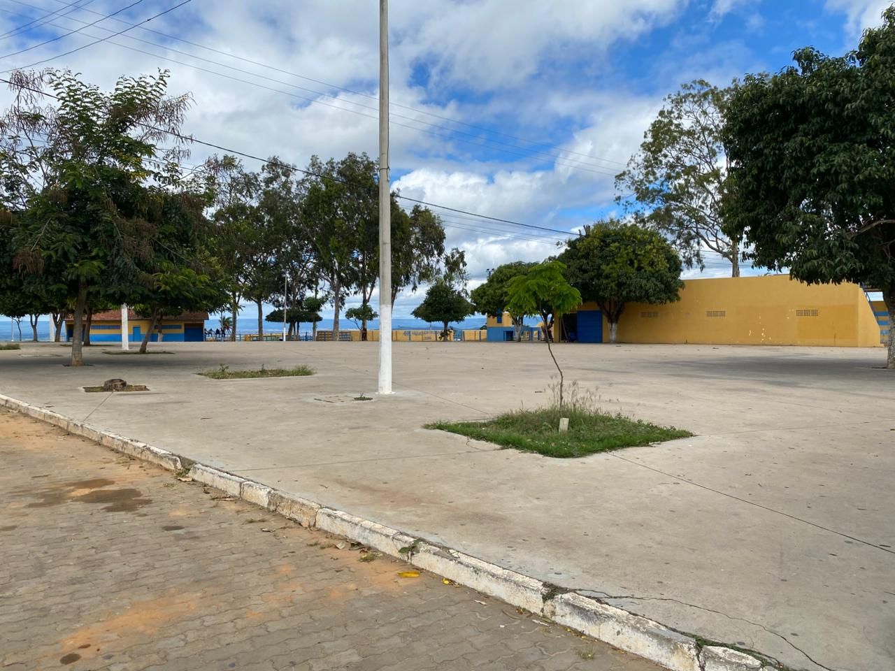
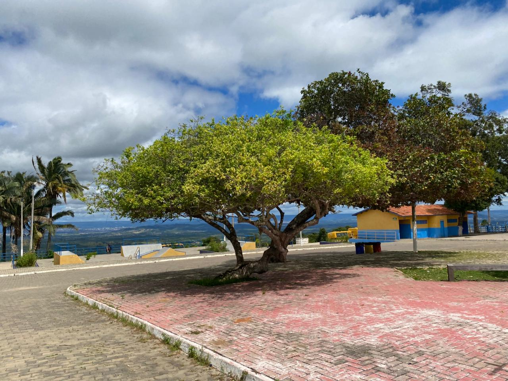

Parque Recreio Paraiso
O Parque Recreio Paraíso é um dos espaços públicos mais importantes do município de Caririaçu, no estado
do Ceará. Localizado no bairro Paraíso, o parque se tornou ao longo dos anos um grande centro de lazer,
cultura, esporte e realização de eventos tradicionais da cidade.
O espaço é conhecido principalmente por
sediar festas municipais, apresentações culturais, vaquejadas, eventos esportivos e comemorações da
emancipação política de Caririaçu, reunindo moradores e visitantes de várias cidades da região do
Cariri.
O parque já existia há muitos anos como área de eventos do município, porém passou por grandes
melhorias e ampliações durante a gestão do prefeito Edmilson Leite.
Em 2017, a prefeitura iniciou
serviços de recuperação e manutenção do espaço, realizando pinturas, reparos elétricos, melhorias na
circulação e estrutura geral do local para receber melhor a população durante as festividades
municipais.
No ano de 2019, começaram oficialmente as obras de reforma e ampliação do Parque Recreio
Paraíso. As obras incluíram construção de arquibancadas, urbanização, melhorias na pista de vaquejada,
nova área de dance com piso especial e modernização da estrutura do parque.
O objetivo era transformar o
local em um ambiente mais moderno, confortável e preparado para grandes eventos públicos. Durante o ano
de 2020, a reforma continuou avançando com a construção de arquibancadas cobertas e novas estruturas
para o público.
Segundo informações da Prefeitura de Caririaçu, a obra recebeu investimentos importantes
para fortalecer o turismo, a cultura e o lazer do município. Em 2021, o Governo Federal destacou a
reforma e ampliação do Parque Recreio Paraíso entre as principais obras de infraestrutura turística
realizadas no Nordeste, com investimento aproximado de R$ 1,9 milhão no espaço.
b Além das reformas
estruturais, o parque também recebeu novos equipamentos esportivos e de lazer. Em 2019, teve início a
construção da pista de skate, oferecendo um novo espaço para os jovens praticarem esporte e convivência
social.
Já em 2023, foi inaugurada a Brinquedopraça dentro do parque, ampliando as opções de diversão
para as crianças e famílias de Caririaçu. A importância do Parque Recreio Paraíso para Caririaçu vai
muito além do lazer. O local representa um ponto de encontro da população, fortalecendo a cultura, o
turismo, o esporte e a economia local durante os grandes eventos realizados na cidade.
O parque também
simboliza o desenvolvimento urbano do município e o investimento em espaços públicos voltados para a
convivência da comunidade. Atualmente, o Parque Recreio Paraíso é considerado um dos principais
cartões-postais de Caririaçu e um dos maiores espaços públicos de eventos e lazer da região.